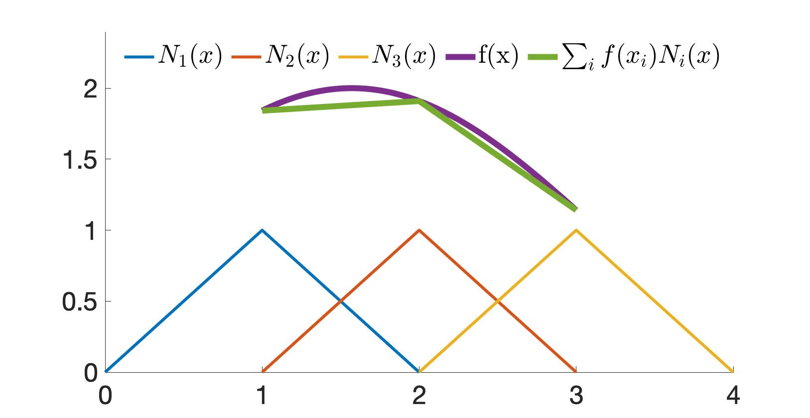

离散空间
为使弱形式中的积分可以数值求值，第一步是离散化光滑向量场 与 。这样它们就能用有限个采样点以及相应的插值函数来表示。
示例 17.1.1 (一维函数插值). 在一维情形下，若要用三个采样点 、、 来近似函数 （图 17.1.1），我们可以使用插值函数 ，并构造 。

图 17.1.1. 借助插值函数 、、 与采样点 、、，函数 可近似为 。
给定仿真域中一组以 或 编号的采样点，我们可以把测试函数 与自由度 近似为： 其中 表示 的第 个分量在时刻 于采样点 处的取值，而 是采样点 处的插值函数。同样地，我们还有： 把这些离散化代入弱形式（公式 (17.1)），并用指标记法表示求和，可得： 在左端，我们看到采样值 与 实际上与 无关，因此可以把它们移到积分号外，得到： 其中 即质量矩阵。
注记 17.1.1 (质量矩阵的性质). 质量矩阵 （公式 (17.1.2)）是对称且半正定的，因为它可以写成： 其中 。于是，对任意向量 ， 在实践中，该质量矩阵可能是奇异的。为解决这一问题，我们通常采用“质量集中”策略，用对角且正定的形式近似质量矩阵。具体做法是对每一行求和并定义：
经过空间离散后，弱形式（公式 (17.1)）的解被限制在 个 维函数空间中，其中 表示采样点的数目（假定所有插值函数两两正交）。这意味着弱形式可能存在位于我们解空间之外的连续解。在这种情况下，我们只能基于所选的采样点与插值函数给出近似解。
定义 17.1.1 (正交函数). 类似于两个向量 与 的正交性（定义为 ），两个函数 与 的正交性定义为： 正如一组基向量可以张成一个有限维空间，正交函数也可以构成函数空间的一组无穷基。从概念上讲，上述积分类似于向量的点积。
话虽如此，为了生成可求解未知量的方程，任意的测试函数 并不需要取遍所有可能情况以产生无穷多个方程。相反，我们只需产生一个张成整个解空间的有限方程组。因此，令 遍历所有采样点，并取 ，我们可以指定测试函数为： 从而得到 个方程： 即得到 个未知量与 个方程，使我们离离散形式又近了一步。
公式 (17.1.3) 右端的两个积分，根据插值函数的具体选择，既可以解析求值，也可以使用求积规则求值。我们将在后续课程中详细讨论这些内容。